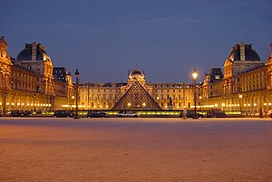
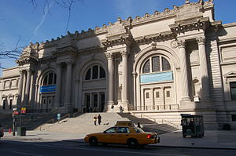
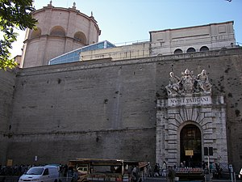
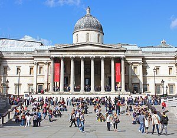
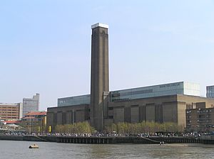
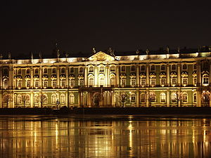
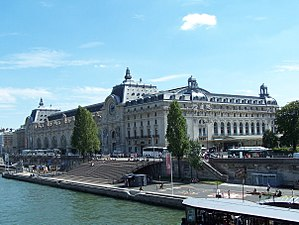

Список самых посещаемых художественных музеев мира
Список самых посещаемых художественных музеев мира причисляет 63 объекта, пользующихся наибольшим интересом среди посетителей музеев и галерей, экспозиции которых главным образом состоят из произведений художественного искусства. Под художественным искусством понимаются скульптура, живопись, графика, фотоискусство и декоративно-прикладное искусство.
| № | Название | Город | Страна | Посетителей в год | Фотография |
|---|---|---|---|---|---|
| 1 | Лувр | Париж | Франция | 8 600 000 |  |
| 2 | Британский музей | Лондон | Великобритания | 6 820 686 |  |
| 3 | Метрополитен-музей | Нью-Йорк | США | 6 533 106 |  |
| 4 | Музеи Ватикана | Ватикан(Рим) | Ватикан | 6 002 251 |  |
| 5 | Лондонская национальная галерея | Лондон | Великобритания | 5 908 254 |  |
| 6 | Музей императорского дворца | Тайбэй | Китайская Республика | 5 291 797 | |
| 7 | Тейт Модерн | Лондон | Великобритания | 4 712 581 |  |
| 8 | Национальная галерея искусства | Вашингтон | США | 4 104 331 | |
| 9 | Государственный Эрмитаж | Санкт-Петербург | Россия | 3 668 031 |  |
| 10 | Музей Орсе | Париж | Франция | 3 440 000 |  |
Смотрите также: Места Беларуси, которые стоит посетить.